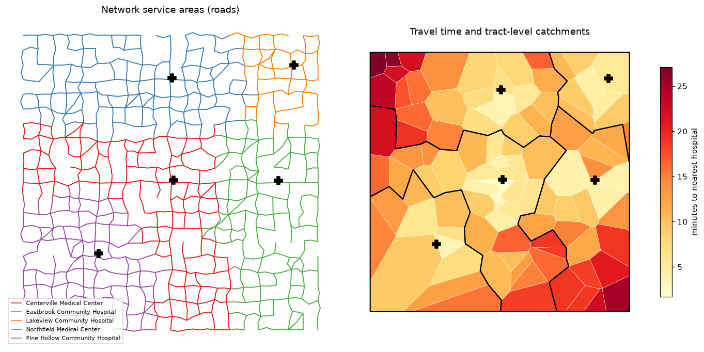
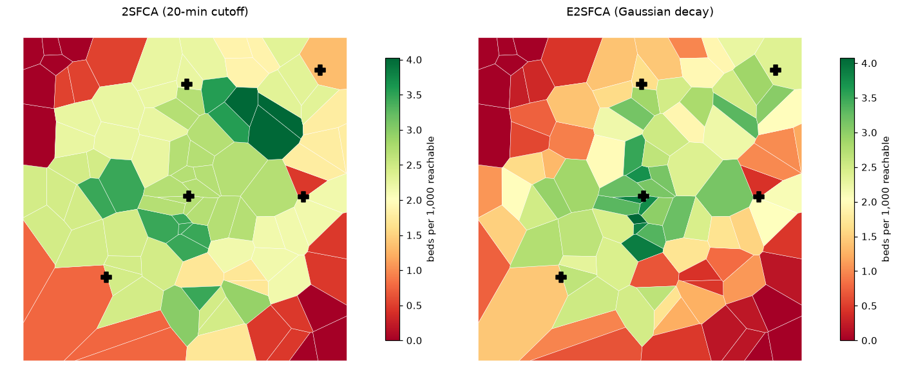
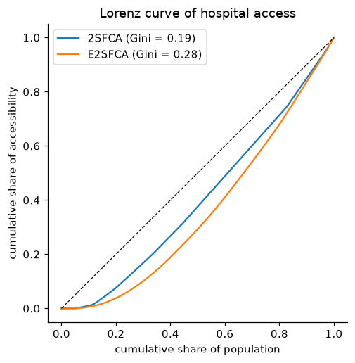
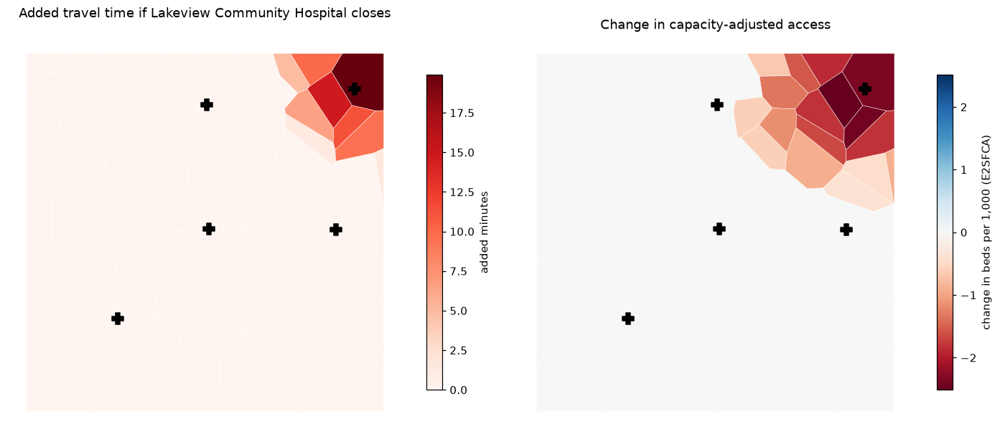

Spatial accessibility asks how easily people can reach services. This notebook works through the standard toolkit on the synthetic region in Data/00_shared/data_spatial_net/, using geolattice.spatial_analysis.network_analysis for snapping, coverage, 2SFCA / E2SFCA, and Lorenz-Gini summaries.
Nearest-facility travel time (network vs straight line)
Network service areas (multi-source Dijkstra)
Coverage of total and older (65+) population within time thresholds
The next cell finds the repository root, puts it on the import path, points DATA at data/data_spatial_net, and imports geolattice.spatial_analysis.network_analysis as sna.
Installation. This notebook needs installation option 2 (core plus spatial analysis): pip install "geolattice[analysis]". See “Installation options” in the GeoLattice README.
Code
# Display matplotlib figures inline in this Jupyter notebook.%matplotlib inline# Standard library imports for path setup and warning control.import warnings # silence noisy third-party warnings during demosfrom pathlib import Path # filesystem paths for locating sample data# Third-party GIS / network / plotting stack used throughout the notebook.import geopandas as gpd # GeoDataFrame I/O and geometry opsimport matplotlib.pyplot as plt # figure and axes creation for mapsimport networkx as nx # graph algorithms and conversionsimport numpy as np # array ops for distances and matricesimport pandas as pd # tabular display of resultsfrom IPython.display import display # rich table previews in the notebook# Hide library warnings so the notebook output stays readable.warnings.filterwarnings("ignore") # hide library warnings in notebook output# ===================================================================# Setup for spatial network demos.# Import GeoLattice, point DATA at Data/00_shared/data_spatial_net,# and import network_analysis as sna.# ===================================================================# The installed package lives in src/; the repository root is its parent.import geolatticeROOT = Path(geolattice.__file__).resolve().parents[1]ifnot (ROOT /"Data").is_dir():raiseFileNotFoundError("Could not find the GeoLattice repository root.")# Synthetic road / town / tract data used by the network chapter.DATA = ROOT /"Data"/"00_shared"/"data_spatial_net"# chapter sample-data folder under the repo# Spatial network helpers from geolattice.from geolattice.spatial_analysis import network_analysis as sna # spatial network helpers aliased as sna# Compact figures with top/right spines removed for a cleaner look.plt.rcParams.update( # compact figures with cleaner spines {"figure.dpi": 110, "axes.spines.top": False, "axes.spines.right": False} # notebook step)print("repo:", ROOT) # status line for the notebook readerprint("data:", DATA) # status line for the notebook readerprint("networkx", nx.__version__, "| geopandas", gpd.__version__) # status line for the notebook reader# OSMnx for graph <-> GeoDataFrame conversion when mapping service areas.import osmnx as ox # graph_to_gdfs for road geometries# Load roads, attach travel times in minutes, and read demand/supply layers.G = sna.load_road_graph(DATA /"roads.graphml") # offline MultiDiGraphG = sna.prepare_travel_times( # impute speeds and edge travel times G, # notebook step hwy_speeds={"residential": 50, "tertiary": 60, "secondary": 70, "primary": 90}, # km/h defaults minutes_attr="minutes", # store travel_time also as minutes on edges)tracts = gpd.read_file(DATA /"tracts.geojson") # demand polygonshosp = gpd.read_file(DATA /"hospitals.geojson") # facility points with bedstowns = gpd.read_file(DATA /"towns.geojson") # candidate sites laterprint(G, "| hospitals:", len(hosp), "| tracts:", len(tracts)) # status line for the notebook reader# Demand weight for older adults used in coverage tables.tracts["pop65"] = tracts.population * tracts.pct_over65 /100.0# notebook step
Demand points are tract centroids (population-weighted centroids from block data are better when available). We also record the snapping distance: the leg from the centroid to the road, which we convert to time at an assumed 30 km/h access speed.
Code
# ===================================================================# Snap tract centroids and hospitals to the road network.# Centroid-to-road legs become access_min at an assumed 30 km/h.# ===================================================================cent = tracts.geometry.centroid # demand points (centroids as a proxy)cent_gdf = tracts.copy() # mutable copy stored as cent_gdfcent_gdf.geometry = cent # GeoDataFrame of centroid points for snappingtracts["node"], snap_m = sna.snap_points_to_nodes(cent_gdf, G, return_dist=True) # call a geolattice.network_analysis helper# Convert snap distance (m) to minutes at 30 km/h = 500 m/min.tracts["access_min"] = np.asarray(snap_m) / (30_000/60) # run this analysis or plotting stephosp["node"] = sna.snap_points_to_nodes(hosp, G) # supply nodesprint(f"median centroid-to-road leg: {np.median(snap_m):.0f} m ({tracts.access_min.median():.1f} min)") # status line for the notebook reader
median centroid-to-road leg: 769 m (1.5 min)
Part B: Nearest hospital for everyone in one pass
Running Dijkstra once per tract would work, but nx.multi_source_dijkstra is far more efficient: it starts from all hospitals at once and labels every node with the time to the nearest one. Because our roads are two-way, time from hospital to node equals time from node to hospital. (For networks with one-way streets, run it on G.reverse().)
Code
# ===================================================================# Multi-source Dijkstra from all hospitals: nearest facility time/path.# Compare network nearest hospital with Euclidean nearest hospital.# ===================================================================# One Dijkstra from every hospital node labels each network node.dist, paths = nx.multi_source_dijkstra(G, set(hosp.node), weight="minutes") # multi-source Dijkstra distances and pathsnode2hosp = hosp.set_index("node")["hospital"] # node id -> hospital name# First node on each path is the source hospital that won the race.nearest = {n: node2hosp[p[0]] for n, p in paths.items()} # network node -> nearest hospital name# Network minutes = on-network time + off-network access leg.tracts["net_min"] = tracts.node.map(dist) + tracts.access_min # run this analysis or plotting steptracts["nearest_net"] = tracts.node.map(nearest) # run this analysis or plotting step# Straight-line comparison: min Euclidean distance to any hospital.hx, hy = hosp.geometry.x.values, hosp.geometry.y.values # hospital x/y coordinate arraysD = np.hypot(cent.x.values[:, None] - hx, cent.y.values[:, None] - hy) # pairwise distance matrixtracts["euclid_km"] = D.min(axis=1) /1000# run this analysis or plotting steptracts["nearest_euclid"] = hosp.hospital.values[D.argmin(axis=1)] # run this analysis or plotting steptracts[["tract_id", "population", "euclid_km", "net_min", "nearest_euclid", "nearest_net"]].head(8).round(2) # run this analysis or plotting step
tract_id
population
euclid_km
net_min
nearest_euclid
nearest_net
0
T000
1267
14.06
16.13
Pine Hollow Community Hospital
Centerville Medical Center
1
T001
1227
8.95
14.70
Pine Hollow Community Hospital
Pine Hollow Community Hospital
2
T002
1447
6.64
9.27
Pine Hollow Community Hospital
Pine Hollow Community Hospital
3
T003
1334
19.47
27.12
Northfield Medical Center
Northfield Medical Center
4
T004
1151
19.36
22.00
Northfield Medical Center
Centerville Medical Center
5
T005
1643
17.36
26.56
Northfield Medical Center
Northfield Medical Center
6
T006
1696
18.26
23.70
Northfield Medical Center
Northfield Medical Center
7
T007
1360
9.09
13.20
Pine Hollow Community Hospital
Pine Hollow Community Hospital
Code
# ===================================================================# Count tracts where Euclidean and network nearest hospitals disagree,# then scatter Euclidean km vs network minutes (red = mismatch).# ===================================================================mismatch = tracts.nearest_euclid != tracts.nearest_net # tracts where Euclidean and network nearest disagreeprint( # status line for the notebook readerf"Tracts whose nearest hospital differs (network vs straight line): {mismatch.sum()} "# run this analysis or plotting stepf"({tracts.loc[mismatch, 'population'].sum():,} people)"# run this analysis or plotting step)fig, ax = plt.subplots(figsize=(6.5, 4)) # create figure and primary axesax.scatter( # plot point markers tracts.euclid_km, # notebook step tracts.net_min, # notebook step s=tracts.population /150, # marker area ~ population alpha=0.6, # regularisation strength (0 = unpenalised PPML) c=np.where(mismatch, "#d62728", "#3182bd"), # red when nearest hospital differs)ax.set( # set labels, title, or axis limits xlabel="straight-line km to nearest hospital", # x-axis label ylabel="network minutes to nearest hospital", # y-axis label title="Euclidean distance is only a rough proxy\n(red = nearest hospital differs)", # plot or map title)plt.show() # render the figure in the notebook
Tracts at the same straight-line distance can differ by several minutes depending on whether a fast road connects them. A threshold rule such as “more than 15 km from a hospital” would therefore flag some well-connected tracts and miss some poorly connected ones.
Part C: Service areas
The set of network locations closer (in time) to one facility than to any other is its network service area, the network analogue of a Voronoi polygon. Colouring every road segment by its nearest hospital and dissolving tracts by nearest hospital gives two views of it.
Code
# ===================================================================# Map network service areas on roads and tract catchments by travel time.# ===================================================================nodes, edges = ox.graph_to_gdfs(G) # convert MultiDiGraph to node/edge GeoDataFrames# Colour each edge by the nearest hospital of its u-node.edges["hospital"] = [nearest[u] for u, v, k in edges.index] # notebook steppalette =dict(zip(hosp.hospital, ["#e41a1c", "#377eb8", "#4daf4a", "#984ea3", "#ff7f00"])) # hospital name -> display colourfig, axes = plt.subplots(1, 2, figsize=(13, 6.2)) # create a grid of subplot axes# Left: roads coloured by nearest hospital (network Voronoi).for h, sub in edges.groupby("hospital"): # iterate over the collection sub.plot(ax=axes[0], color=palette[h], lw=1, label=h) # draw geometries or a series on the axeshosp.plot(ax=axes[0], color="k", marker="P", markersize=120, zorder=3) # draw geometries or a series on the axesaxes[0].legend(fontsize=7, loc="lower left") # add a legendaxes[0].set_title("Network service areas (roads)") # configure this subplot's labels or titleaxes[0].set_axis_off() # configure this subplot's labels or title# Right: tract travel times with dissolved catchment boundaries.tracts.plot( # draw geometries or a series on the axes ax=axes[1], # draw into these axes column="net_min", # attribute used for the choropleth cmap="YlOrRd", # colormap for continuous / categorical values legend=True, # show a legend or colour bar edgecolor="white", # polygon / marker edge colour lw=0.3, # line width legend_kwds={"label": "minutes to nearest hospital", "shrink": 0.7}, # legend / colour-bar styling)tracts.dissolve("nearest_net").boundary.plot(ax=axes[1], color="k", lw=1.4) # draw geometries or a series on the axeshosp.plot(ax=axes[1], color="k", marker="P", markersize=120, zorder=3) # draw geometries or a series on the axesaxes[1].set_title("Travel time and tract-level catchments") # configure this subplot's labels or titleaxes[1].set_axis_off() # configure this subplot's labels or titleplt.tight_layout() # reduce wasted whitespace between panelsplt.show() # render the figure in the notebook

Part D: Coverage
Coverage tables are the headline result for most policy audiences: what share of people, and of vulnerable people, can reach care within standard thresholds? Here we report total and 65+ population.
Code
# ===================================================================# Population coverage within 10 / 15 / 20 / 30 minute thresholds.# Report total population and population aged 65+.# ===================================================================cov = sna.population_coverage( # population coverage by time threshold tracts, # notebook step time_col="net_min", # nearest-facility minutes including access leg pop_cols=("population", "pop65"), # total and older-adult demand thresholds=(10, 15, 20, 30), # coverage time thresholds).rename(columns={"% population": "% population", "% pop65": "% aged 65+"}) # run this analysis or plotting stepcov # notebook step
% population
% aged 65+
≤ minutes
10
62.039786
62.990803
15
85.475133
84.246862
20
94.964041
93.995359
30
100.000000
100.000000
Code
# ===================================================================# Catchment summary per hospital: population load and people per bed.# ===================================================================catch = tracts.groupby("nearest_net").agg( # hospital catchment summary table tracts=("tract_id", "count"), # tracts argument population=("population", "sum"), # population argument mean_min=("net_min", "mean"), # mean_min argument max_min=("net_min", "max"), # max_min argument)catch = catch.join(hosp.set_index("hospital")["beds"]) # attach bed capacitycatch["people_per_bed"] = (catch.population / catch.beds).round(0) # run this analysis or plotting stepcatch.round(1) # run this analysis or plotting step
tracts
population
mean_min
max_min
beds
people_per_bed
nearest_net
Centerville Medical Center
35
174875
9.9
22.0
420
416.0
Eastbrook Community Hospital
21
46079
13.7
25.2
95
485.0
Lakeview Community Hospital
9
17016
8.6
14.9
45
378.0
Northfield Medical Center
25
46746
13.5
27.1
110
425.0
Pine Hollow Community Hospital
11
20767
10.0
15.6
60
346.0
Nearest-facility measures ignore capacity: the Centerville Medical Center serves its catchment with plenty of beds, while smaller hospitals may be relatively overloaded. That is what the floating catchment family of methods corrects.
Part E: Two-step floating catchment area (2SFCA)
Luo & Wang (2003):
For each hospital j, compute a supply-to-demand ratio using all population within threshold \(d_0\) (we use 20 minutes): \(R_j = \dfrac{S_j}{\sum_{i:\, t_{ij} \le d_0} P_i}\)
For each tract i, sum the ratios of all hospitals it can reach: \(A_i = \sum_{j:\, t_{ij} \le d_0} R_j\)
The enhanced version (E2SFCA, Luo & Qi 2009) replaces the hard cutoff with a distance-decay weight \(f(t_{ij})\) in both steps. \(A_i\) is in beds per person; we report beds per 1,000.
Code
# ===================================================================# Build tract-by-hospital travel-time matrix, then 2SFCA and E2SFCA.# Accessibility reported as beds per 1,000 people.# ===================================================================# Tract-by-hospital travel-time matrix (minutes), including access legs.H = [] # infection / prevalence trajectoriesfor r in hosp.itertuples(): # iterate GeoDataFrame rows as named tuples d = nx.single_source_dijkstra_path_length(G, r.node, weight="minutes") # d argument H.append(tracts.node.map(d).values + tracts.access_min.values) # append this recordT = np.array(H).T # shape (tracts, hospitals), minutesP = tracts.population.values.astype(float) # demand vectorS = hosp.beds.values.astype(float) # supply vector# Hard 20-minute cutoff 2SFCA vs Gaussian-decay E2SFCA.tracts["A_2sfca"] = sna.two_sfca(T, P, S) # call a geolattice.network_analysis helpertracts["A_e2sfca"] = sna.two_sfca(T, P, S, decay=lambda t: sna.gaussian_distance_decay(t, d0=20)) # call a geolattice.network_analysis helperprint(f"Region-wide supply: {S.sum() / P.sum() *1000:.2f} beds per 1,000") # status line for the notebook readertracts[["A_2sfca", "A_e2sfca"]].describe().round(2) # run this analysis or plotting step
Region-wide supply: 2.39 beds per 1,000
A_2sfca
A_e2sfca
count
101.00
101.00
mean
2.06
1.78
std
1.06
1.16
min
0.00
0.00
25%
1.70
0.75
50%
2.23
1.91
75%
2.69
2.66
max
4.02
4.07
Code
# ===================================================================# Side-by-side maps of 2SFCA (hard cutoff) and E2SFCA (Gaussian decay).# ===================================================================fig, axes = plt.subplots(1, 2, figsize=(13, 6)) # create a grid of subplot axesfor ax, col, title in [ # notebook step (axes[0], "A_2sfca", "2SFCA (20-min cutoff)"), # continue multi-line call (axes[1], "A_e2sfca", "E2SFCA (Gaussian decay)"), # continue multi-line call]: tracts.plot( # draw geometries or a series on the axes ax=ax, # draw into these axes column=col, # attribute used for the choropleth cmap="RdYlGn", # colormap for continuous / categorical values legend=True, # show a legend or colour bar edgecolor="white", # polygon / marker edge colour lw=0.3, # line width legend_kwds={"label": "beds per 1,000 reachable", "shrink": 0.7}, # legend / colour-bar styling ) hosp.plot(ax=ax, color="k", marker="P", markersize=100, zorder=3) # draw geometries or a series on the axes ax.set_title(title) # panel / map title ax.set_axis_off() # hide coordinate ticks for a clean mapplt.tight_layout() # reduce wasted whitespace between panelsplt.show() # render the figure in the notebook

The plain 2SFCA map has abrupt steps at 20-minute catchment edges; E2SFCA produces a smoother, more realistic gradient. Both reveal something the nearest-facility map did not: tracts near small, crowded community hospitals can have lower effective supply than more distant tracts that also reach the large medical center.
Inequality in access
A Lorenz curve and Gini coefficient summarise how evenly access is distributed across the population.
Code
# ===================================================================# Lorenz curves and Gini coefficients for 2SFCA vs E2SFCA accessibility.# Population weights come from the demand vector P.# ===================================================================fig, ax = plt.subplots(figsize=(5, 5)) # create figure and primary axesfor col, lab in [("A_2sfca", "2SFCA"), ("A_e2sfca", "E2SFCA")]: # iterate over the collection x, y, g = sna.lorenz_curve_gini(tracts[col].values, P) # cumulative shares + Gini ax.plot(x, y, label=f"{lab} (Gini = {g:.2f})") # draw lines or edges on the axesax.plot([0, 1], [0, 1], "k--", lw=0.8) # equality referenceax.set( # set labels, title, or axis limits xlabel="cumulative share of population", # x-axis label ylabel="cumulative share of accessibility", # y-axis label title="Lorenz curve of hospital access", # plot or map title)ax.legend() # add a legend for mapped layersplt.show() # render the figure in the notebook

Part F: Scenario: a hospital closes
Rural hospital closures are a real and recurring policy issue. Remove the Lakeview Community Hospital and recompute nearest-facility times, coverage, and E2SFCA.
Code
# ===================================================================# Closure scenario: remove Lakeview and recompute times / E2SFCA / coverage.# ===================================================================closed ="Lakeview Community Hospital"# name of the hospital closed in the scenariokeep = hosp.hospital != closed # boolean mask of hospitals that remain open# Nearest-facility times without the closed hospital.dist_c, _ = nx.multi_source_dijkstra(G, set(hosp.loc[keep, "node"]), weight="minutes") # run this analysis or plotting steptracts["net_min_closed"] = tracts.node.map(dist_c) + tracts.access_min # run this analysis or plotting step# E2SFCA with the closed hospital's column removed from T and S.tracts["A_e2sfca_closed"] = sna.two_sfca( # call a geolattice.network_analysis helper T[:, keep.values], # notebook step P, # notebook step S[keep.values], # notebook step decay=lambda t: sna.gaussian_distance_decay(t, d0=20), # distance-decay function for E2SFCA)tracts["added_min"] = tracts.net_min_closed - tracts.net_min # delay vs baseline# Side-by-side coverage tables before and after the closure.comp = pd.concat( # before/after comparison table { # notebook step"current": sna.population_coverage(tracts, time_col="net_min", pop_cols=("population", "pop65")), # call a geolattice.network_analysis helper"after closure": sna.population_coverage( # call a geolattice.network_analysis helper tracts, time_col="net_min_closed", pop_cols=("population", "pop65") # run this analysis or plotting step ), }, axis=1, # axis argument)print( # status line for the notebook readerf"People with longer trips: {tracts.loc[tracts.added_min >0.01, 'population'].sum():,}; "# run this analysis or plotting stepf"max added time {tracts.added_min.max():.1f} min"# run this analysis or plotting step)comp # notebook step
People with longer trips: 17,016; max added time 19.9 min
current
after closure
% population
% pop65
% population
% pop65
≤ minutes
10
62.039786
62.990803
58.492617
58.807037
15
85.475133
84.246862
80.616597
78.596798
20
94.964041
93.995359
94.325380
93.205244
30
100.000000
100.000000
100.000000
100.000000
Code
# ===================================================================# Map added travel time and change in E2SFCA after the hospital closure.# ===================================================================fig, axes = plt.subplots(1, 2, figsize=(13, 6)) # create a grid of subplot axestracts.plot( # draw geometries or a series on the axes ax=axes[0], # draw into these axes column="added_min", # attribute used for the choropleth cmap="Reds", # colormap for continuous / categorical values legend=True, # show a legend or colour bar edgecolor="white", # polygon / marker edge colour lw=0.3, # line width legend_kwds={"label": "added minutes", "shrink": 0.7}, # legend / colour-bar styling)axes[0].set_title(f"Added travel time if {closed} closes") # configure this subplot's labels or titletracts["dA"] = tracts.A_e2sfca_closed - tracts.A_e2sfca # change in beds per 1,000lim = np.abs(tracts.dA).max() # symmetric colour scaletracts.plot( # draw geometries or a series on the axes ax=axes[1], # draw into these axes column="dA", # attribute used for the choropleth cmap="RdBu", # colormap for continuous / categorical values vmin=-lim, # colour-scale minimum vmax=lim, # colour-scale maximum legend=True, # show a legend or colour bar edgecolor="white", # polygon / marker edge colour lw=0.3, # line width legend_kwds={"label": "change in beds per 1,000 (E2SFCA)", "shrink": 0.7}, # legend / colour-bar styling)axes[1].set_title("Change in capacity-adjusted access") # configure this subplot's labels or titlefor ax in axes: # iterate over the collection hosp.plot(ax=ax, color="k", marker="P", markersize=100, zorder=3) # draw geometries or a series on the axes ax.set_axis_off() # hide coordinate ticks for a clean mapplt.tight_layout() # reduce wasted whitespace between panelsplt.show() # render the figure in the notebook

The closure lengthens trips by up to about 20 minutes in the northeast corner, and E2SFCA access falls in the same area because those tracts lose nearby beds. Notice what does not change: the ratios of the remaining hospitals. In 2SFCA each \(R_j\) depends only on the population inside hospital j’s own catchment, so Lakeview’s former patients are not “pushed” onto Northfield or Eastbrook. Capturing that spillover requires models with facility choice or competition, such as 3SFCA (Wan et al., 2012) or Huff-model-weighted variants, a good extension exercise.
Part G: Location-allocation: where should a new facility go?
Two classic objectives, evaluated over the 20 towns as candidate sites:
p-median: minimise total population-weighted travel time.
Maximal coverage: maximise population within a threshold (here 15 minutes).
With one new site we can evaluate every candidate exhaustively. For several sites, greedy addition or integer programming (e.g., spopt.locate) is used.
Code
# ===================================================================# Exhaustive one-site location search over towns without a hospital.# Compare p-median (min mean time) vs maximal coverage (<= 15 min).# ===================================================================# Candidate towns that do not already host a hospital.cand = towns[~towns.town.isin(hosp.town)].copy() # candidate facility sites without an existing hospitalcand["node"] = sna.snap_points_to_nodes(cand, G) # call a geolattice.network_analysis helpercur = tracts.net_min.values # baseline nearest-facility minutesrows = [] # accumulate one record per edge / pair / scenariofor r in cand.itertuples(): # iterate GeoDataFrame rows as named tuples# Minutes from the candidate site to every tract (plus access leg). d = nx.single_source_dijkstra_path_length(G, r.node, weight="minutes") # d argument t_new = np.minimum(cur, tracts.node.map(d).values + tracts.access_min.values) # t_new argument rows.append({ # append this record"candidate": r.town, # continue string literal"pop-weighted mean min": np.average(t_new, weights=P), # continue multi-line call"% pop <= 15 min": 100* P[t_new <=15].sum() / P.sum(), # continue multi-line call"% 65+ <= 15 min": 100* tracts.pop65.values[t_new <=15].sum() / tracts.pop65.sum(), # continue multi-line call })loc = pd.DataFrame(rows) # location-allocation evaluation table# Baseline row with no new site for comparison.base = { # define base"candidate": "(no new site)", # continue multi-line call"pop-weighted mean min": np.average(cur, weights=P), # continue multi-line call"% pop <= 15 min": 100* P[cur <=15].sum() / P.sum(), # continue multi-line call"% 65+ <= 15 min": 100* tracts.pop65.values[cur <=15].sum() / tracts.pop65.sum(), # continue multi-line call}loc = pd.concat([pd.DataFrame([base]), loc]).set_index("candidate").round(2) # location-allocation evaluation tableprint("p-median best :", loc["pop-weighted mean min"].iloc[1:].idxmin()) # status line for the notebook readerprint("maximal coverage best:", loc["% pop <= 15 min"].iloc[1:].idxmax()) # status line for the notebook readerloc.sort_values("pop-weighted mean min").head(6) # run this analysis or plotting step
p-median best : Oak Grove
maximal coverage best: Oak Grove
pop-weighted mean min
% pop <= 15 min
% 65+ <= 15 min
candidate
Oak Grove
8.08
91.60
90.14
Elmwood
8.24
90.86
90.09
Stonebridge
8.29
90.31
89.80
Cedar Ridge
8.38
89.33
88.37
Southport
8.41
89.97
88.79
Westover
8.54
87.37
86.61
Here both objectives pick the same town, but they need not agree: p-median favours sites that shave minutes off many moderately served people, while maximal coverage favours sites that lift the most people across the threshold. Which objective is “right” is a policy choice, and showing both is good practice.
Summary
multi_source_dijkstra gives nearest-facility time and allocation for every node in one pass.
Network service areas and coverage tables are the core descriptive outputs; always report vulnerable subgroups too.
Euclidean distance misallocates some tracts and misstates times; use the network.
2SFCA / E2SFCA account for capacity and competition; Lorenz curves and Gini summarise equity.
Closure and siting scenarios turn the same machinery into a decision-support tool.
Exercises
Repeat Part E with \(d_0\) = 15 and 30 minutes (at 30 minutes almost every tract reaches every hospital in this compact region; what happens to the map?). How does the Gini coefficient respond?
Weight demand by population aged 65+ instead of total population in 2SFCA. Which tracts change most?
Extend Part G greedily to add two new sites. Is the best pair the same as the best single site plus the next best?
Model winter conditions by slowing residential roads to 30 km/h. Which tracts drop below the 20-minute standard?
Next: 03.06.5 moves from physical access to flows of people between places.